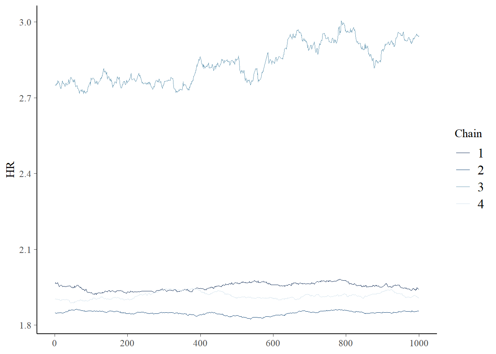
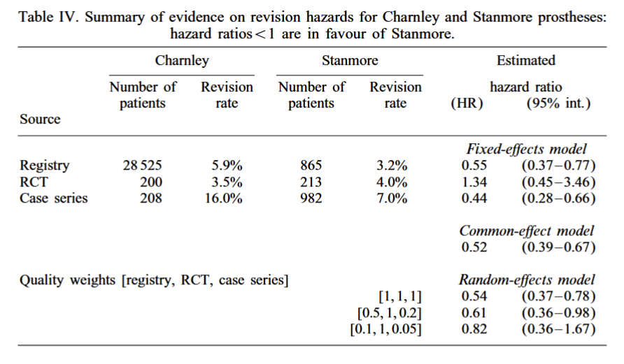
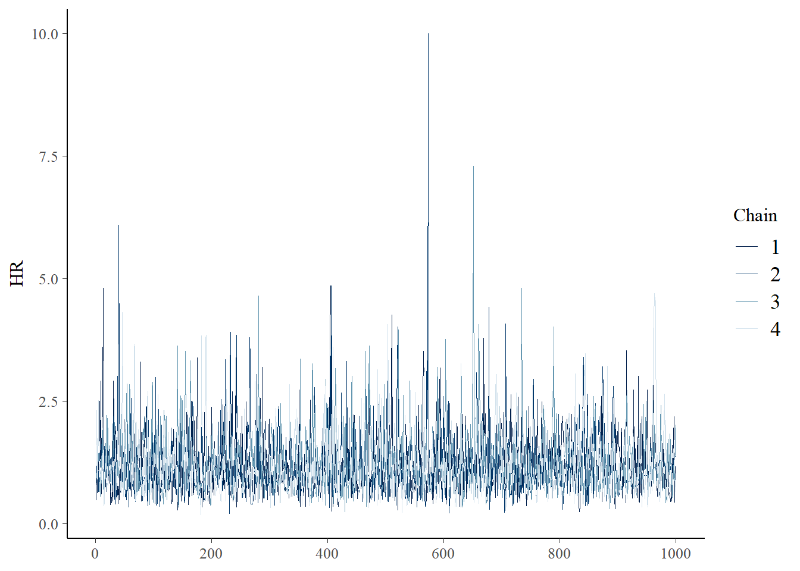
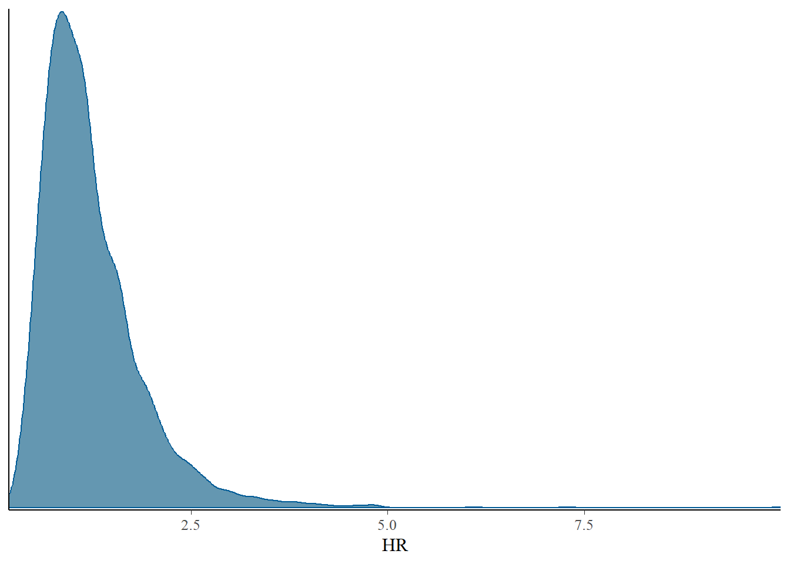
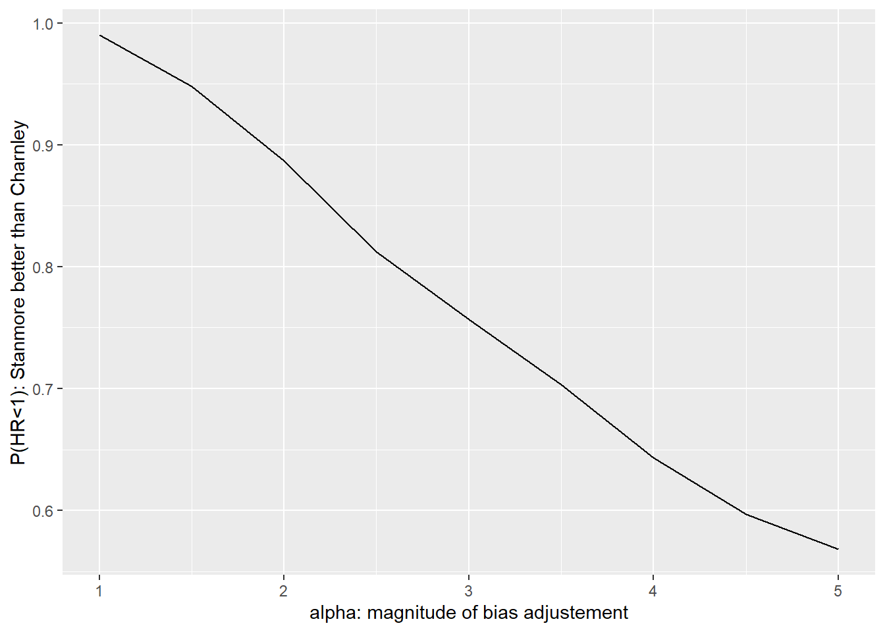
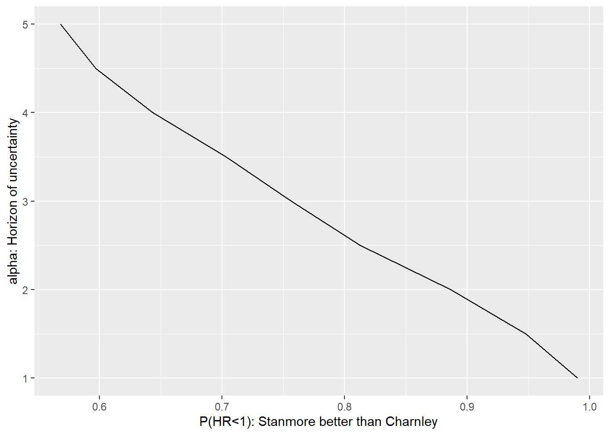

library(cmdstanr)
library(ggplot2)
library(bayesplot)Bayesian data and decision analysis
Case study of the Hip replacement evidence synthesis
Case study description
A Bayesian evidence synthesis can be seen as a calibration of a model with multiple sources of evidence. Spiegelhalter and Best (2003) demonstrates a one step approach for forward and backward Bayesian sampling, to keep a consistent characterisation of uncertainty.
The aim of this case study is to reproduce the parametric inference in their paper (Bayesian evidence synthesis with bias adjustment) and apply a simple decision model using stochastic dominance to evaluate which alternative to choose.
Decision analysis using info-gap decision theory
Parametric inference
Data
df_sb <- data.frame(
n = c(28525,865,200,213,208,982),
revision = c(5.9,3.2,3.5,4,16,7),
obs = round(c(28525*0.059,865*0.032,200*0.035,213*0.04,208*0.16,982*0.07)),
treatment = rep(c('Charnley', 'Stanmore'),3),
stream = rep(c('Registry', 'RCT', 'Case series'),each=2))
df_sb # View data n revision obs treatment stream
1 28525 5.9 1683 Charnley Registry
2 865 3.2 28 Stanmore Registry
3 200 3.5 7 Charnley RCT
4 213 4.0 9 Stanmore RCT
5 208 16.0 33 Charnley Case series
6 982 7.0 69 Stanmore Case seriesModel for evidence synthesis
Let \(r_{ik}\) be the number of patients requiring a revision operation out of \(N_{ik}\) patients that receiving prosthesis \(i\) (1=Charnely, 2=Stanmore) in study \(k\)
\[r_{ik}\sim Bin(\theta_{ik},N_{ik})\] The cumulative hazard up to the average follow-up is derived from the proportion requiring revision \(\theta_{ik}\) as
\[H_{ik}=\log(\frac{1}{1-\theta_{ik}})=-\log (1-\theta_{ik})\]
The hazard ratio for Stanmore versus Charnley is defined as \(HR_k=\frac{H_{2k}}{H_{1k}}\), which is the same as
\[\log HR_k = \log H_{2k}-\log H_{1k}\]
Original model specification
In the original paper by Spiegelhalter and Best (2003), the study-specific hazard ratio is modelled as
\[\log HR_k \sim N(\log \overline{HR},\frac{\sigma}{q_k})\]
script_sb_paper <- "
data {
int<lower=1> n; // total number of observations
array[n] int r; // response variable
array[n] int N; // number of trials
array[n] int x; // population-level design matrix
int<lower=1> K; // number of grouping levels
array[n] int<lower=1> g; // grouping indicator per observation
array[K] real q; // quality terms
vector[2] hyper_sigma; // hyper parameters for sigma prior
}
parameters {
matrix<lower=0,upper=1>[K,2] theta; //
real<lower=0> sigma;
}
transformed parameters {
matrix[K,2] logH; // cumulative hazard
logH = log(-log(1-theta));
vector[K] logHR; // hazard ratio
logHR = logH[,1] - logH[,2];
real avlogHR; // average of hazard ratios
avlogHR = mean(logHR);
}
model {
// prior
to_vector(theta) ~ beta(1,1);
sigma ~ normal(hyper_sigma[1],hyper_sigma[2]); // gamma(14,70); // informed prior similar to normal(0.2,0.05);
// likelihood
for (id in 1:n) {
r[id] ~ binomial(N[id],theta[g[id],x[id]]); // observations
}
for (j in 1:K) {
logHR ~ normal(avlogHR, sigma/q[j]); // random effects
}
}
generated quantities {
real HR; // hazard ratio
HR = exp(avlogHR);
}
"
write_stan_file( # save to a stan file locally
code = script_sb_paper,dir = getwd(),
basename = "modelcode_sb_paper"
)[1] "C:/Rfolder/BADT26/pages/modelcode_sb_paper.stan"# turn data to list
stan_data <- list(n = nrow(df_sb), K = nrow(df_sb)/2, N = df_sb$n, r = df_sb$obs, x = 1+1*(df_sb$treatment=="Stanmore"),
g = rep(1:3,each=2),
q = c(1,1,1) # quality weights resulting in 0.54 (0.37-0.78)
#q = c(0.5,1,0.2) # quality weights resulting in 0.61 (0.36 - 0.98)
#q = c(0.1,1,0.05) # quality weights resulting in 0.82 (0.36 - 1.67)
)
# prior specification
list_priors <- list(
hyper_sigma = c(0.2,0.05),
hyper_theta = c(-3,0.5) # binomial probability parameters, should be small
)
# compile model
model.sb_paper <- cmdstan_model("modelcode_sb_paper.stan") # the first time may take long to perform
# perform the mcmc sampling
post <- model.sb_paper$sample(data=append(stan_data,list_priors), seed = 1975, step_size = 0.1)Running MCMC with 4 sequential chains...
Chain 1 Iteration: 1 / 2000 [ 0%] (Warmup) Chain 1 Informational Message: The current Metropolis proposal is about to be rejected because of the following issue:Chain 1 Exception: normal_lpdf: Location parameter is -inf, but must be finite! (in 'C:/Users/ekol-usa/AppData/Local/Temp/Rtmpa0cyrT/model-7d1037f430.stan', line 35, column 6 to column 42)Chain 1 If this warning occurs sporadically, such as for highly constrained variable types like covariance matrices, then the sampler is fine,Chain 1 but if this warning occurs often then your model may be either severely ill-conditioned or misspecified.Chain 1 Chain 1 Informational Message: The current Metropolis proposal is about to be rejected because of the following issue:Chain 1 Exception: normal_lpdf: Location parameter is -inf, but must be finite! (in 'C:/Users/ekol-usa/AppData/Local/Temp/Rtmpa0cyrT/model-7d1037f430.stan', line 35, column 6 to column 42)Chain 1 If this warning occurs sporadically, such as for highly constrained variable types like covariance matrices, then the sampler is fine,Chain 1 but if this warning occurs often then your model may be either severely ill-conditioned or misspecified.Chain 1 Chain 1 Informational Message: The current Metropolis proposal is about to be rejected because of the following issue:Chain 1 Exception: normal_lpdf: Random variable[2] is nan, but must be not nan! (in 'C:/Users/ekol-usa/AppData/Local/Temp/Rtmpa0cyrT/model-7d1037f430.stan', line 35, column 6 to column 42)Chain 1 If this warning occurs sporadically, such as for highly constrained variable types like covariance matrices, then the sampler is fine,Chain 1 but if this warning occurs often then your model may be either severely ill-conditioned or misspecified.Chain 1 Chain 1 Iteration: 100 / 2000 [ 5%] (Warmup)
Chain 1 Iteration: 200 / 2000 [ 10%] (Warmup)
Chain 1 Iteration: 300 / 2000 [ 15%] (Warmup)
Chain 1 Iteration: 400 / 2000 [ 20%] (Warmup)
Chain 1 Iteration: 500 / 2000 [ 25%] (Warmup)
Chain 1 Iteration: 600 / 2000 [ 30%] (Warmup)
Chain 1 Iteration: 700 / 2000 [ 35%] (Warmup)
Chain 1 Iteration: 800 / 2000 [ 40%] (Warmup)
Chain 1 Iteration: 900 / 2000 [ 45%] (Warmup)
Chain 1 Iteration: 1000 / 2000 [ 50%] (Warmup)
Chain 1 Iteration: 1001 / 2000 [ 50%] (Sampling)
Chain 1 Iteration: 1100 / 2000 [ 55%] (Sampling)
Chain 1 Iteration: 1200 / 2000 [ 60%] (Sampling)
Chain 1 Iteration: 1300 / 2000 [ 65%] (Sampling)
Chain 1 Iteration: 1400 / 2000 [ 70%] (Sampling)
Chain 1 Iteration: 1500 / 2000 [ 75%] (Sampling)
Chain 1 Iteration: 1600 / 2000 [ 80%] (Sampling)
Chain 1 Iteration: 1700 / 2000 [ 85%] (Sampling)
Chain 1 Iteration: 1800 / 2000 [ 90%] (Sampling)
Chain 1 Iteration: 1900 / 2000 [ 95%] (Sampling)
Chain 1 Iteration: 2000 / 2000 [100%] (Sampling)
Chain 1 finished in 12.0 seconds.
Chain 2 Iteration: 1 / 2000 [ 0%] (Warmup) Chain 2 Informational Message: The current Metropolis proposal is about to be rejected because of the following issue:Chain 2 Exception: normal_lpdf: Random variable[1] is nan, but must be not nan! (in 'C:/Users/ekol-usa/AppData/Local/Temp/Rtmpa0cyrT/model-7d1037f430.stan', line 35, column 6 to column 42)Chain 2 If this warning occurs sporadically, such as for highly constrained variable types like covariance matrices, then the sampler is fine,Chain 2 but if this warning occurs often then your model may be either severely ill-conditioned or misspecified.Chain 2 Chain 2 Informational Message: The current Metropolis proposal is about to be rejected because of the following issue:Chain 2 Exception: normal_lpdf: Location parameter is -inf, but must be finite! (in 'C:/Users/ekol-usa/AppData/Local/Temp/Rtmpa0cyrT/model-7d1037f430.stan', line 35, column 6 to column 42)Chain 2 If this warning occurs sporadically, such as for highly constrained variable types like covariance matrices, then the sampler is fine,Chain 2 but if this warning occurs often then your model may be either severely ill-conditioned or misspecified.Chain 2 Chain 2 Iteration: 100 / 2000 [ 5%] (Warmup)
Chain 2 Iteration: 200 / 2000 [ 10%] (Warmup)
Chain 2 Iteration: 300 / 2000 [ 15%] (Warmup)
Chain 2 Iteration: 400 / 2000 [ 20%] (Warmup)
Chain 2 Iteration: 500 / 2000 [ 25%] (Warmup)
Chain 2 Iteration: 600 / 2000 [ 30%] (Warmup)
Chain 2 Iteration: 700 / 2000 [ 35%] (Warmup)
Chain 2 Iteration: 800 / 2000 [ 40%] (Warmup)
Chain 2 Iteration: 900 / 2000 [ 45%] (Warmup)
Chain 2 Iteration: 1000 / 2000 [ 50%] (Warmup)
Chain 2 Iteration: 1001 / 2000 [ 50%] (Sampling)
Chain 2 Iteration: 1100 / 2000 [ 55%] (Sampling)
Chain 2 Iteration: 1200 / 2000 [ 60%] (Sampling)
Chain 2 Iteration: 1300 / 2000 [ 65%] (Sampling)
Chain 2 Iteration: 1400 / 2000 [ 70%] (Sampling)
Chain 2 Iteration: 1500 / 2000 [ 75%] (Sampling)
Chain 2 Iteration: 1600 / 2000 [ 80%] (Sampling)
Chain 2 Iteration: 1700 / 2000 [ 85%] (Sampling)
Chain 2 Iteration: 1800 / 2000 [ 90%] (Sampling)
Chain 2 Iteration: 1900 / 2000 [ 95%] (Sampling)
Chain 2 Iteration: 2000 / 2000 [100%] (Sampling)
Chain 2 finished in 11.7 seconds.
Chain 3 Iteration: 1 / 2000 [ 0%] (Warmup) Chain 3 Informational Message: The current Metropolis proposal is about to be rejected because of the following issue:Chain 3 Exception: normal_lpdf: Random variable[1] is nan, but must be not nan! (in 'C:/Users/ekol-usa/AppData/Local/Temp/Rtmpa0cyrT/model-7d1037f430.stan', line 35, column 6 to column 42)Chain 3 If this warning occurs sporadically, such as for highly constrained variable types like covariance matrices, then the sampler is fine,Chain 3 but if this warning occurs often then your model may be either severely ill-conditioned or misspecified.Chain 3 Chain 3 Iteration: 100 / 2000 [ 5%] (Warmup)
Chain 3 Iteration: 200 / 2000 [ 10%] (Warmup)
Chain 3 Iteration: 300 / 2000 [ 15%] (Warmup)
Chain 3 Iteration: 400 / 2000 [ 20%] (Warmup)
Chain 3 Iteration: 500 / 2000 [ 25%] (Warmup)
Chain 3 Iteration: 600 / 2000 [ 30%] (Warmup)
Chain 3 Iteration: 700 / 2000 [ 35%] (Warmup)
Chain 3 Iteration: 800 / 2000 [ 40%] (Warmup)
Chain 3 Iteration: 900 / 2000 [ 45%] (Warmup)
Chain 3 Iteration: 1000 / 2000 [ 50%] (Warmup)
Chain 3 Iteration: 1001 / 2000 [ 50%] (Sampling)
Chain 3 Iteration: 1100 / 2000 [ 55%] (Sampling)
Chain 3 Iteration: 1200 / 2000 [ 60%] (Sampling)
Chain 3 Iteration: 1300 / 2000 [ 65%] (Sampling)
Chain 3 Iteration: 1400 / 2000 [ 70%] (Sampling)
Chain 3 Iteration: 1500 / 2000 [ 75%] (Sampling)
Chain 3 Iteration: 1600 / 2000 [ 80%] (Sampling)
Chain 3 Iteration: 1700 / 2000 [ 85%] (Sampling)
Chain 3 Iteration: 1800 / 2000 [ 90%] (Sampling)
Chain 3 Iteration: 1900 / 2000 [ 95%] (Sampling)
Chain 3 Iteration: 2000 / 2000 [100%] (Sampling)
Chain 3 finished in 11.1 seconds.
Chain 4 Iteration: 1 / 2000 [ 0%] (Warmup) Chain 4 Informational Message: The current Metropolis proposal is about to be rejected because of the following issue:Chain 4 Exception: normal_lpdf: Location parameter is -inf, but must be finite! (in 'C:/Users/ekol-usa/AppData/Local/Temp/Rtmpa0cyrT/model-7d1037f430.stan', line 35, column 6 to column 42)Chain 4 If this warning occurs sporadically, such as for highly constrained variable types like covariance matrices, then the sampler is fine,Chain 4 but if this warning occurs often then your model may be either severely ill-conditioned or misspecified.Chain 4 Chain 4 Informational Message: The current Metropolis proposal is about to be rejected because of the following issue:Chain 4 Exception: normal_lpdf: Location parameter is -inf, but must be finite! (in 'C:/Users/ekol-usa/AppData/Local/Temp/Rtmpa0cyrT/model-7d1037f430.stan', line 35, column 6 to column 42)Chain 4 If this warning occurs sporadically, such as for highly constrained variable types like covariance matrices, then the sampler is fine,Chain 4 but if this warning occurs often then your model may be either severely ill-conditioned or misspecified.Chain 4 Chain 4 Informational Message: The current Metropolis proposal is about to be rejected because of the following issue:Chain 4 Exception: normal_lpdf: Random variable[3] is nan, but must be not nan! (in 'C:/Users/ekol-usa/AppData/Local/Temp/Rtmpa0cyrT/model-7d1037f430.stan', line 35, column 6 to column 42)Chain 4 If this warning occurs sporadically, such as for highly constrained variable types like covariance matrices, then the sampler is fine,Chain 4 but if this warning occurs often then your model may be either severely ill-conditioned or misspecified.Chain 4 Chain 4 Iteration: 100 / 2000 [ 5%] (Warmup)
Chain 4 Iteration: 200 / 2000 [ 10%] (Warmup)
Chain 4 Iteration: 300 / 2000 [ 15%] (Warmup)
Chain 4 Iteration: 400 / 2000 [ 20%] (Warmup)
Chain 4 Iteration: 500 / 2000 [ 25%] (Warmup)
Chain 4 Iteration: 600 / 2000 [ 30%] (Warmup)
Chain 4 Iteration: 700 / 2000 [ 35%] (Warmup)
Chain 4 Iteration: 800 / 2000 [ 40%] (Warmup)
Chain 4 Iteration: 900 / 2000 [ 45%] (Warmup)
Chain 4 Iteration: 1000 / 2000 [ 50%] (Warmup)
Chain 4 Iteration: 1001 / 2000 [ 50%] (Sampling)
Chain 4 Iteration: 1100 / 2000 [ 55%] (Sampling)
Chain 4 Iteration: 1200 / 2000 [ 60%] (Sampling)
Chain 4 Iteration: 1300 / 2000 [ 65%] (Sampling)
Chain 4 Iteration: 1400 / 2000 [ 70%] (Sampling)
Chain 4 Iteration: 1500 / 2000 [ 75%] (Sampling)
Chain 4 Iteration: 1600 / 2000 [ 80%] (Sampling)
Chain 4 Iteration: 1700 / 2000 [ 85%] (Sampling)
Chain 4 Iteration: 1800 / 2000 [ 90%] (Sampling)
Chain 4 Iteration: 1900 / 2000 [ 95%] (Sampling)
Chain 4 Iteration: 2000 / 2000 [100%] (Sampling)
Chain 4 finished in 12.8 seconds.
All 4 chains finished successfully.
Mean chain execution time: 11.9 seconds.
Total execution time: 48.1 seconds.Warning: 261 of 4000 (7.0%) transitions ended with a divergence.
See https://mc-stan.org/misc/warnings for details.Warning: 3632 of 4000 (91.0%) transitions hit the maximum treedepth limit of 10.
See https://mc-stan.org/misc/warnings for details.# check convergence
post$diagnostic_summary()Warning: 261 of 4000 (7.0%) transitions ended with a divergence.
See https://mc-stan.org/misc/warnings for details.Warning: 3632 of 4000 (91.0%) transitions hit the maximum treedepth limit of 10.
See https://mc-stan.org/misc/warnings for details.$num_divergent
[1] 158 0 63 40
$num_max_treedepth
[1] 826 956 904 946
$ebfmi
[1] 0.8756741 1.3886749 0.9843974 1.1608537# summarise the relevant quantities of interest
draws <- post$draws()
bayesplot::mcmc_trace(draws,pars = "HR")
Alternative model specification
This specification is problematic, since the likelihood is based on an average of three parameters.
Instead, we implement the model by letting \(\delta_k = \log HR_k\) be a study specific log hazard ratio and \(\mu\) be the expected value of the overall log of the hazard ratio
\[\delta_k \sim N(\mu,\frac{\sigma}{q_k})\]
We let parameter \(\eta_k\) be a study specific average of the log cumulative hazards, and calculate cumulative hazard ratios as
\[\begin{split} \log H_{1k} &= \eta_k - \frac{\delta_k}{2} \\ \log H_{2k} &= \eta_k + \frac{\delta_k}{2} \end{split}\]
Prior specification
We use a normal-distribution for the log of the overall hazard ratio and for the average log cumulative hazard parameters
\[\mu \sim N(0,2)\] Study-specific log hazard are small numbers \[\eta_{k} \sim N(-3,0.5)\]
From the paper: The three studies do not provide sufficient evidence to accurately estimate the between-study standard deviation \(\sigma\), so substantial prior judgement is necessary. For this we used a truncated normal
\[\sigma \sim N(0.2,0.05)T[0,]\]
- Draw the graph for the Bayesian model!

Implement Bayesian model calibration
Below is the stan script for the respecified model.
script_sb <- "
data {
int<lower=1> n; // total number of observations
array[n] int r; // response variable
array[n] int N; // number of trials
array[n] int x; // population-level design matrix
int<lower=1> K; // number of grouping levels
array[n] int<lower=1> g; // grouping indicator per observation
array[K] real q; // quality terms
vector[2] hyper_sigma; // hyper parameters for sigma prior
vector[2] hyper_mu; // hyper parameters for mu prior
vector[2] hyper_eta; // hyper parameters for eta prior
}
parameters {
real mu; // overall log hazard ratio
real<lower=0> sigma; // between study variation in log hazard ratio
vector[K] eta; // study specfic average log cumulative hazard between the two interventions
vector[K] delta; // study specific difference in log cumulative hazards of the two interventions
}
model {
matrix[K,2] theta; // binomial parameter for each intervention and study
// prior
to_vector(eta) ~ normal(hyper_eta[1],hyper_eta[2]);
mu ~ normal(hyper_mu[1],hyper_mu[2]);
sigma ~ normal(hyper_sigma[1],hyper_sigma[2]) T[0,]; // informed prior similar to normal(0.2,0.05);
// random effects
for (j in 1:K) {
delta[j] ~ normal(mu,sigma/q[j]);
theta[j,1] = 1-exp(-exp(eta[j] - delta[j]/2));
theta[j,2] = 1-exp(-exp(eta[j] + delta[j]/2));
}
// likelihood
for (id in 1:n) {
r[id] ~ binomial(N[id],theta[g[id],x[id]]); // observations
}
}
generated quantities {
real HR; // overall hazard ratio
HR = exp(mu);
}
"
write_stan_file( # save to a stan file locally
code = script_sb,dir = getwd(),
basename = "modelcode_sb"
)[1] "C:/Rfolder/BADT26/pages/modelcode_sb.stan"# turn data to list
stan_data <- list(n = nrow(df_sb), K = nrow(df_sb)/2, N = df_sb$n, r = df_sb$obs, x = 1+1*(df_sb$treatment=="Stanmore"),
g = rep(1:3,each=2),
#q = c(1,1,1) # quality weights resulting in 0.54 (0.37-0.78)
#q = c(0.5,1,0.2) # quality weights resulting in 0.61 (0.36 - 0.98)
q = c(0.1,1,0.05) # quality weights resulting in 0.82 (0.36 - 1.67)
)
# prior specification
list_priors <- list(
hyper_sigma = c(0.2,0.05),
hyper_eta = c(-3,0.5),
hyper_mu = c(0,2)
)
# compile model
model.sb <- cmdstan_model("modelcode_sb.stan") # the first time may take long to perform
# perform the mcmc sampling
post <- model.sb$sample(data=append(stan_data,list_priors), seed = 1975, step_size = 0.1)Running MCMC with 4 sequential chains...
Chain 1 Iteration: 1 / 2000 [ 0%] (Warmup)
Chain 1 Iteration: 100 / 2000 [ 5%] (Warmup)
Chain 1 Iteration: 200 / 2000 [ 10%] (Warmup)
Chain 1 Iteration: 300 / 2000 [ 15%] (Warmup)
Chain 1 Iteration: 400 / 2000 [ 20%] (Warmup)
Chain 1 Iteration: 500 / 2000 [ 25%] (Warmup)
Chain 1 Iteration: 600 / 2000 [ 30%] (Warmup)
Chain 1 Iteration: 700 / 2000 [ 35%] (Warmup)
Chain 1 Iteration: 800 / 2000 [ 40%] (Warmup)
Chain 1 Iteration: 900 / 2000 [ 45%] (Warmup)
Chain 1 Iteration: 1000 / 2000 [ 50%] (Warmup)
Chain 1 Iteration: 1001 / 2000 [ 50%] (Sampling)
Chain 1 Iteration: 1100 / 2000 [ 55%] (Sampling)
Chain 1 Iteration: 1200 / 2000 [ 60%] (Sampling)
Chain 1 Iteration: 1300 / 2000 [ 65%] (Sampling)
Chain 1 Iteration: 1400 / 2000 [ 70%] (Sampling)
Chain 1 Iteration: 1500 / 2000 [ 75%] (Sampling)
Chain 1 Iteration: 1600 / 2000 [ 80%] (Sampling)
Chain 1 Iteration: 1700 / 2000 [ 85%] (Sampling)
Chain 1 Iteration: 1800 / 2000 [ 90%] (Sampling)
Chain 1 Iteration: 1900 / 2000 [ 95%] (Sampling)
Chain 1 Iteration: 2000 / 2000 [100%] (Sampling)
Chain 1 finished in 0.1 seconds.
Chain 2 Iteration: 1 / 2000 [ 0%] (Warmup)
Chain 2 Iteration: 100 / 2000 [ 5%] (Warmup)
Chain 2 Iteration: 200 / 2000 [ 10%] (Warmup)
Chain 2 Iteration: 300 / 2000 [ 15%] (Warmup)
Chain 2 Iteration: 400 / 2000 [ 20%] (Warmup)
Chain 2 Iteration: 500 / 2000 [ 25%] (Warmup)
Chain 2 Iteration: 600 / 2000 [ 30%] (Warmup)
Chain 2 Iteration: 700 / 2000 [ 35%] (Warmup)
Chain 2 Iteration: 800 / 2000 [ 40%] (Warmup)
Chain 2 Iteration: 900 / 2000 [ 45%] (Warmup)
Chain 2 Iteration: 1000 / 2000 [ 50%] (Warmup)
Chain 2 Iteration: 1001 / 2000 [ 50%] (Sampling)
Chain 2 Iteration: 1100 / 2000 [ 55%] (Sampling) Chain 2 Informational Message: The current Metropolis proposal is about to be rejected because of the following issue:Chain 2 Exception: normal_lpdf: Scale parameter is 0, but must be positive! (in 'C:/Users/ekol-usa/AppData/Local/Temp/RtmpopC6JH/model-27a01fe21da5.stan', line 31, column 4 to column 37)Chain 2 If this warning occurs sporadically, such as for highly constrained variable types like covariance matrices, then the sampler is fine,Chain 2 but if this warning occurs often then your model may be either severely ill-conditioned or misspecified.Chain 2 Chain 2 Iteration: 1200 / 2000 [ 60%] (Sampling)
Chain 2 Iteration: 1300 / 2000 [ 65%] (Sampling)
Chain 2 Iteration: 1400 / 2000 [ 70%] (Sampling)
Chain 2 Iteration: 1500 / 2000 [ 75%] (Sampling)
Chain 2 Iteration: 1600 / 2000 [ 80%] (Sampling)
Chain 2 Iteration: 1700 / 2000 [ 85%] (Sampling)
Chain 2 Iteration: 1800 / 2000 [ 90%] (Sampling)
Chain 2 Iteration: 1900 / 2000 [ 95%] (Sampling)
Chain 2 Iteration: 2000 / 2000 [100%] (Sampling)
Chain 2 finished in 0.1 seconds.
Chain 3 Iteration: 1 / 2000 [ 0%] (Warmup)
Chain 3 Iteration: 100 / 2000 [ 5%] (Warmup)
Chain 3 Iteration: 200 / 2000 [ 10%] (Warmup)
Chain 3 Iteration: 300 / 2000 [ 15%] (Warmup)
Chain 3 Iteration: 400 / 2000 [ 20%] (Warmup)
Chain 3 Iteration: 500 / 2000 [ 25%] (Warmup)
Chain 3 Iteration: 600 / 2000 [ 30%] (Warmup)
Chain 3 Iteration: 700 / 2000 [ 35%] (Warmup)
Chain 3 Iteration: 800 / 2000 [ 40%] (Warmup)
Chain 3 Iteration: 900 / 2000 [ 45%] (Warmup)
Chain 3 Iteration: 1000 / 2000 [ 50%] (Warmup)
Chain 3 Iteration: 1001 / 2000 [ 50%] (Sampling)
Chain 3 Iteration: 1100 / 2000 [ 55%] (Sampling)
Chain 3 Iteration: 1200 / 2000 [ 60%] (Sampling)
Chain 3 Iteration: 1300 / 2000 [ 65%] (Sampling)
Chain 3 Iteration: 1400 / 2000 [ 70%] (Sampling)
Chain 3 Iteration: 1500 / 2000 [ 75%] (Sampling)
Chain 3 Iteration: 1600 / 2000 [ 80%] (Sampling)
Chain 3 Iteration: 1700 / 2000 [ 85%] (Sampling)
Chain 3 Iteration: 1800 / 2000 [ 90%] (Sampling)
Chain 3 Iteration: 1900 / 2000 [ 95%] (Sampling)
Chain 3 Iteration: 2000 / 2000 [100%] (Sampling)
Chain 3 finished in 0.1 seconds.
Chain 4 Iteration: 1 / 2000 [ 0%] (Warmup)
Chain 4 Iteration: 100 / 2000 [ 5%] (Warmup)
Chain 4 Iteration: 200 / 2000 [ 10%] (Warmup)
Chain 4 Iteration: 300 / 2000 [ 15%] (Warmup)
Chain 4 Iteration: 400 / 2000 [ 20%] (Warmup)
Chain 4 Iteration: 500 / 2000 [ 25%] (Warmup)
Chain 4 Iteration: 600 / 2000 [ 30%] (Warmup)
Chain 4 Iteration: 700 / 2000 [ 35%] (Warmup)
Chain 4 Iteration: 800 / 2000 [ 40%] (Warmup)
Chain 4 Iteration: 900 / 2000 [ 45%] (Warmup)
Chain 4 Iteration: 1000 / 2000 [ 50%] (Warmup)
Chain 4 Iteration: 1001 / 2000 [ 50%] (Sampling)
Chain 4 Iteration: 1100 / 2000 [ 55%] (Sampling)
Chain 4 Iteration: 1200 / 2000 [ 60%] (Sampling)
Chain 4 Iteration: 1300 / 2000 [ 65%] (Sampling)
Chain 4 Iteration: 1400 / 2000 [ 70%] (Sampling)
Chain 4 Iteration: 1500 / 2000 [ 75%] (Sampling)
Chain 4 Iteration: 1600 / 2000 [ 80%] (Sampling)
Chain 4 Iteration: 1700 / 2000 [ 85%] (Sampling)
Chain 4 Iteration: 1800 / 2000 [ 90%] (Sampling)
Chain 4 Iteration: 1900 / 2000 [ 95%] (Sampling)
Chain 4 Iteration: 2000 / 2000 [100%] (Sampling)
Chain 4 finished in 0.1 seconds.
All 4 chains finished successfully.
Mean chain execution time: 0.1 seconds.
Total execution time: 0.9 seconds.Warning: 64 of 4000 (2.0%) transitions ended with a divergence.
See https://mc-stan.org/misc/warnings for details.# check convergence
post$diagnostic_summary()Warning: 64 of 4000 (2.0%) transitions ended with a divergence.
See https://mc-stan.org/misc/warnings for details.$num_divergent
[1] 3 59 0 2
$num_max_treedepth
[1] 0 0 0 0
$ebfmi
[1] 1.040202 1.064848 1.029038 1.093800post$summary(variables=c("HR","mu","sigma"))# A tibble: 3 × 10
variable mean median sd mad q5 q95 rhat ess_bulk ess_tail
<chr> <dbl> <dbl> <dbl> <dbl> <dbl> <dbl> <dbl> <dbl> <dbl>
1 HR 1.22 1.08 0.649 0.496 0.518 2.41 1.00 2704. 2460.
2 mu 0.0856 0.0772 0.477 0.478 -0.658 0.881 1.00 2704. 2460.
3 sigma 0.173 0.175 0.0541 0.0538 0.0801 0.260 1.01 262. 56.4# summarise the relevant quantities of interest
draws <- post$draws()
bayesplot::mcmc_trace(draws,pars = "HR")
bayesplot::mcmc_dens(post$draws(),pars = "HR", prob=0.8)Warning: The following arguments were unrecognized and ignored: prob
post_stan <- post$draws(format="df")
mean(post_stan$HR>1)[1] 0.56125Decision analysis
Recall that a hazard ratio less than 1 is in favour of Stanmore. We can summarise uncertainty in the hazard ratio by the probability that it is less than 1, i.e. \(P(HR<1)\) and select Stanmore if this probability is acceptably high. Here, the probability is a performance measure. A value close to 50% implies that there is no difference between the two methods.
Now we run the analysis for increasingly stronger assumptions about the bias adjustement terms, derive the performance measure.
alpha_vals <- seq(1,5,by=0.5)
results <- do.call('rbind',lapply(alpha_vals,function(alpha){
# turn data to list
stan_data <- list(n = nrow(df_sb), K = nrow(df_sb)/2, N = df_sb$n, r = df_sb$obs, x = 1+1*(df_sb$treatment=="Stanmore"),
g = rep(1:3,each=2),
q = c(1/alpha,1,1/alpha/2) # quality weights
)
# perform the mcmc sampling
post <- model.sb$sample(data=append(stan_data,list_priors), seed = 1975, step_size = 0.1, refresh = 0)
post_stan <- post$draws(format="df")
data.frame(alpha=alpha, performance=mean(post_stan$HR<1))
})
)Running MCMC with 4 sequential chains...
Chain 1 finished in 0.1 seconds.Chain 2 Informational Message: The current Metropolis proposal is about to be rejected because of the following issue:Chain 2 Exception: normal_lpdf: Scale parameter is 0, but must be positive! (in 'C:/Users/ekol-usa/AppData/Local/Temp/RtmpopC6JH/model-27a01fe21da5.stan', line 31, column 4 to column 37)Chain 2 If this warning occurs sporadically, such as for highly constrained variable types like covariance matrices, then the sampler is fine,Chain 2 but if this warning occurs often then your model may be either severely ill-conditioned or misspecified.Chain 2 Chain 2 finished in 0.1 seconds.
Chain 3 finished in 0.1 seconds.
Chain 4 finished in 0.1 seconds.
All 4 chains finished successfully.
Mean chain execution time: 0.1 seconds.
Total execution time: 0.7 seconds.
Running MCMC with 4 sequential chains...
Chain 1 finished in 0.1 seconds.Chain 2 Informational Message: The current Metropolis proposal is about to be rejected because of the following issue:Chain 2 Exception: normal_lpdf: Scale parameter is 0, but must be positive! (in 'C:/Users/ekol-usa/AppData/Local/Temp/RtmpopC6JH/model-27a01fe21da5.stan', line 31, column 4 to column 37)Chain 2 If this warning occurs sporadically, such as for highly constrained variable types like covariance matrices, then the sampler is fine,Chain 2 but if this warning occurs often then your model may be either severely ill-conditioned or misspecified.Chain 2 Chain 2 finished in 0.1 seconds.
Chain 3 finished in 0.1 seconds.
Chain 4 finished in 0.1 seconds.
All 4 chains finished successfully.
Mean chain execution time: 0.1 seconds.
Total execution time: 0.9 seconds.
Running MCMC with 4 sequential chains...
Chain 1 finished in 0.1 seconds.Chain 2 Informational Message: The current Metropolis proposal is about to be rejected because of the following issue:Chain 2 Exception: normal_lpdf: Scale parameter is 0, but must be positive! (in 'C:/Users/ekol-usa/AppData/Local/Temp/RtmpopC6JH/model-27a01fe21da5.stan', line 31, column 4 to column 37)Chain 2 If this warning occurs sporadically, such as for highly constrained variable types like covariance matrices, then the sampler is fine,Chain 2 but if this warning occurs often then your model may be either severely ill-conditioned or misspecified.Chain 2 Chain 2 finished in 0.1 seconds.
Chain 3 finished in 0.1 seconds.
Chain 4 finished in 0.1 seconds.
All 4 chains finished successfully.
Mean chain execution time: 0.1 seconds.
Total execution time: 0.7 seconds.Warning: 2 of 4000 (0.0%) transitions ended with a divergence.
See https://mc-stan.org/misc/warnings for details.Running MCMC with 4 sequential chains...
Chain 1 finished in 0.1 seconds.Chain 2 Informational Message: The current Metropolis proposal is about to be rejected because of the following issue:Chain 2 Exception: normal_lpdf: Scale parameter is 0, but must be positive! (in 'C:/Users/ekol-usa/AppData/Local/Temp/RtmpopC6JH/model-27a01fe21da5.stan', line 31, column 4 to column 37)Chain 2 If this warning occurs sporadically, such as for highly constrained variable types like covariance matrices, then the sampler is fine,Chain 2 but if this warning occurs often then your model may be either severely ill-conditioned or misspecified.Chain 2 Chain 2 finished in 0.1 seconds.
Chain 3 finished in 0.1 seconds.
Chain 4 finished in 0.1 seconds.
All 4 chains finished successfully.
Mean chain execution time: 0.1 seconds.
Total execution time: 1.1 seconds.Warning: 2 of 4000 (0.0%) transitions ended with a divergence.
See https://mc-stan.org/misc/warnings for details.Running MCMC with 4 sequential chains...
Chain 1 finished in 0.1 seconds.Chain 2 Informational Message: The current Metropolis proposal is about to be rejected because of the following issue:Chain 2 Exception: normal_lpdf: Scale parameter is 0, but must be positive! (in 'C:/Users/ekol-usa/AppData/Local/Temp/RtmpopC6JH/model-27a01fe21da5.stan', line 31, column 4 to column 37)Chain 2 If this warning occurs sporadically, such as for highly constrained variable types like covariance matrices, then the sampler is fine,Chain 2 but if this warning occurs often then your model may be either severely ill-conditioned or misspecified.Chain 2 Chain 2 finished in 0.1 seconds.
Chain 3 finished in 0.1 seconds.
Chain 4 finished in 0.1 seconds.
All 4 chains finished successfully.
Mean chain execution time: 0.1 seconds.
Total execution time: 0.8 seconds.
Running MCMC with 4 sequential chains...
Chain 1 finished in 0.1 seconds.Chain 2 Informational Message: The current Metropolis proposal is about to be rejected because of the following issue:Chain 2 Exception: normal_lpdf: Scale parameter is 0, but must be positive! (in 'C:/Users/ekol-usa/AppData/Local/Temp/RtmpopC6JH/model-27a01fe21da5.stan', line 31, column 4 to column 37)Chain 2 If this warning occurs sporadically, such as for highly constrained variable types like covariance matrices, then the sampler is fine,Chain 2 but if this warning occurs often then your model may be either severely ill-conditioned or misspecified.Chain 2 Chain 2 finished in 0.1 seconds.
Chain 3 finished in 0.1 seconds.
Chain 4 finished in 0.1 seconds.
All 4 chains finished successfully.
Mean chain execution time: 0.1 seconds.
Total execution time: 0.8 seconds.
Running MCMC with 4 sequential chains...
Chain 1 finished in 0.1 seconds.Chain 2 Informational Message: The current Metropolis proposal is about to be rejected because of the following issue:Chain 2 Exception: normal_lpdf: Scale parameter is 0, but must be positive! (in 'C:/Users/ekol-usa/AppData/Local/Temp/RtmpopC6JH/model-27a01fe21da5.stan', line 31, column 4 to column 37)Chain 2 If this warning occurs sporadically, such as for highly constrained variable types like covariance matrices, then the sampler is fine,Chain 2 but if this warning occurs often then your model may be either severely ill-conditioned or misspecified.Chain 2 Chain 2 finished in 0.1 seconds.
Chain 3 finished in 0.1 seconds.
Chain 4 finished in 0.1 seconds.
All 4 chains finished successfully.
Mean chain execution time: 0.1 seconds.
Total execution time: 0.9 seconds.Warning: 2 of 4000 (0.0%) transitions ended with a divergence.
See https://mc-stan.org/misc/warnings for details.Running MCMC with 4 sequential chains...
Chain 1 finished in 0.1 seconds.Chain 2 Informational Message: The current Metropolis proposal is about to be rejected because of the following issue:Chain 2 Exception: normal_lpdf: Scale parameter is 0, but must be positive! (in 'C:/Users/ekol-usa/AppData/Local/Temp/RtmpopC6JH/model-27a01fe21da5.stan', line 31, column 4 to column 37)Chain 2 If this warning occurs sporadically, such as for highly constrained variable types like covariance matrices, then the sampler is fine,Chain 2 but if this warning occurs often then your model may be either severely ill-conditioned or misspecified.Chain 2 Chain 2 finished in 0.1 seconds.
Chain 3 finished in 0.1 seconds.
Chain 4 finished in 0.1 seconds.
All 4 chains finished successfully.
Mean chain execution time: 0.1 seconds.
Total execution time: 1.0 seconds.Warning: 1 of 4000 (0.0%) transitions ended with a divergence.
See https://mc-stan.org/misc/warnings for details.Running MCMC with 4 sequential chains...
Chain 1 finished in 0.1 seconds.Chain 2 Informational Message: The current Metropolis proposal is about to be rejected because of the following issue:Chain 2 Exception: normal_lpdf: Scale parameter is 0, but must be positive! (in 'C:/Users/ekol-usa/AppData/Local/Temp/RtmpopC6JH/model-27a01fe21da5.stan', line 31, column 4 to column 37)Chain 2 If this warning occurs sporadically, such as for highly constrained variable types like covariance matrices, then the sampler is fine,Chain 2 but if this warning occurs often then your model may be either severely ill-conditioned or misspecified.Chain 2 Chain 2 finished in 0.1 seconds.
Chain 3 finished in 0.1 seconds.
Chain 4 finished in 0.1 seconds.
All 4 chains finished successfully.
Mean chain execution time: 0.1 seconds.
Total execution time: 0.7 seconds.Warning: 9 of 4000 (0.0%) transitions ended with a divergence.
See https://mc-stan.org/misc/warnings for details.ggplot(results,aes(x=alpha, y=performance)) +
geom_line() +
xlab("alpha: magnitude of bias adjustement") +
ylab("P(HR<1): Stanmore better than Charnley") 
ggplot(results,aes(x=performance, y = alpha)) +
geom_line() +
xlab("P(HR<1): Stanmore better than Charnley") +
ylab("alpha: Horizon of uncertainty")